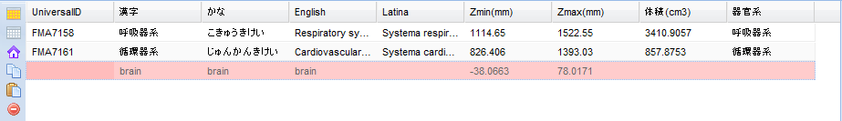
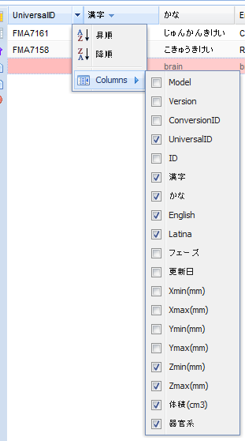

Palletには現在描画対象となっているパーツの一覧が表示されています。メインパネルからPalletに対してパーツをドラッグ＆ドロップすることで、描画対象のパーツを追加することが可能です。
Palletの色は下記のような色分けがされます。
- 赤：対象パーツが表示中のモデル以外の場合
- 赤（UniversalIDが濃い赤）：表示中のモデルに対応するパーツが無い場合
- 黄：同じモデルで、バージョンが異なり、表示中のバージョンに対応するパーツが無い場合

リストのカラムヘッダをクリックすることで、昇順、降順のソートをすることが可能です。
リスト左側の各種ボタンにより下記の操作が可能です。
- ボタン：リスト上の全ての項目を選択状態にします。キーボードのCtrl + Aキーでも同様の操作が可能です。
- ボタン：リスト上の全ての項目の選択を解除します。
 ボタン：現在選択している項目のデータモデルを選択します。リスト上の赤い行が現在選択しているモデルと異なるパーツです。
ボタン：現在選択している項目のデータモデルを選択します。リスト上の赤い行が現在選択しているモデルと異なるパーツです。 ボタン：現在選択している項目の情報をコピーするためのダイアログを開きます。
ボタン：現在選択している項目の情報をコピーするためのダイアログを開きます。 ボタン：タブ区切り、CSV区切りのパーツ情報をペーストするためのダイアログを開きます。
ボタン：タブ区切り、CSV区切りのパーツ情報をペーストするためのダイアログを開きます。- ボタン：選択しているパーツをリストから削除します。キーボードのDeleteキーでも同様の操作が可能です。
カラムヘッダ右端の をクリックすると、Columnsメニューから表示項目の選択が可能です。チェックボックスにチェックがあるものが表示される項目です。
をクリックすると、Columnsメニューから表示項目の選択が可能です。チェックボックスにチェックがあるものが表示される項目です。

- Model：データモデル
- Version：バージョン
- ConversionID：現在選択されているデータモデルに変換した場合のID
- UniversalID：FMA ID
- ID：各データモデルにおけるID
- 漢字：日本語名
- かな：日本語ふりがな
- English：英語名
- Latina：ラテン語名
- フェーズ：データフェーズ
- 更新日：データ更新日
- Xmin：X座標最小値
- Xmax：X座標最大値
- Ymin：Y座標最小値
- Ymax：Y座標最大値
- Zmin：Z座標最小値
- Zmax：Z座標最大値
- 体積：体積
- 器官系：器官系